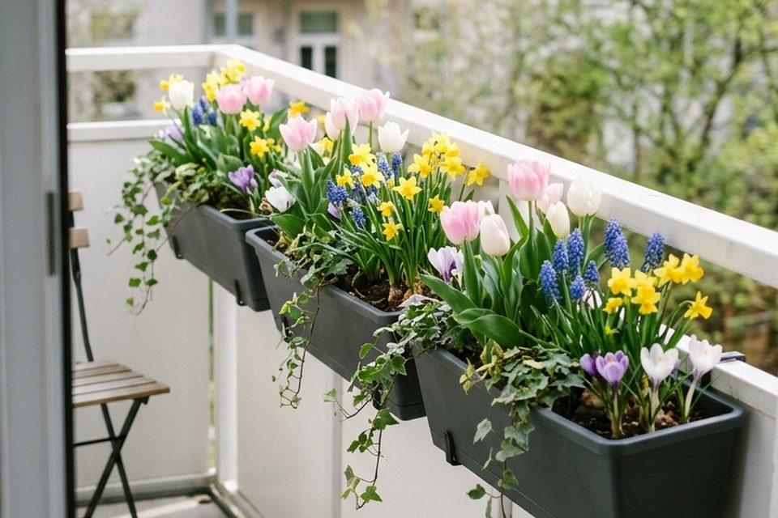

Balkonkästen fürs Frühjahr: jetzt Zwiebeln pflanzen
Wer im Frühling volle, bunte Kästen will, muss jetzt pflanzen: Blumenzwiebeln brauchen den Winter, um im März und April zu blühen. Im Topf geht das bis in den Dezember – solange die Erde nicht gefroren ist. Drei Kästen kosten ab ca. 45 €.
Zur Einkaufsliste & den Kosten ↓
Welche Zwiebeln in den Balkonkasten?
Für Balkonkästen eignen sich niedrige Sorten, die bei Wind nicht umknicken. Pro Kasten (80 cm) diese Mischung:
| Pflanze | Menge pro Kasten | Blüte |
|---|---|---|
| Krokusse | 15 | Februar–März |
| Mini-Narzissen (z. B. ‘Tête-à-Tête’) | 10 | März–April |
| Traubenhyazinthen (Muscari) | 20 | April |
| Niedrige Tulpen (Botanische oder Seerosen-Tulpen) | 10 | April |
So blüht der Kasten nicht nur zwei Wochen, sondern von Februar bis Ende April – immer kommt etwas Neues nach.
Pflanzen nach der Lasagne-Methode
Die Zwiebeln werden in Schichten übereinander gesetzt – große unten, kleine oben. So passen viel mehr in einen Kasten, und alle wachsen durch.
- Drainage: 2–3 cm Blähton in den Kasten, damit die Zwiebeln nicht faulen.
- Erde, dann die Tulpen mit der Spitze nach oben, eng nebeneinander.
- Etwas Erde, darauf die Narzissen.
- Etwas Erde, darauf Traubenhyazinthen.
- Etwas Erde, ganz oben die Krokusse. Mit Erde abdecken und angießen.
- Optional: Efeu oder Hornveilchen obendrauf – dann ist der Kasten auch im Winter grün.
Den Kasten über den Winter draußen lassen. Bei starkem Dauerfrost an die Hauswand stellen oder mit Jute umwickeln, und an frostfreien Tagen nicht ganz austrocknen lassen.
Einkaufsliste für 3 Kästen
| Was | Menge | ca. Preis |
|---|---|---|
| Niedrige Tulpen | 30 | 9–15 € |
| Mini-Narzissen ‘Tête-à-Tête’ | 30 | 9–15 € |
| Traubenhyazinthen | 60 | 6–12 € |
| Krokusse | 45 | 6–12 € |
| Blumenerde, 2 × 20 l | 2 | 8–12 € |
| Blähton, 5 l | 1 | 4–6 € |
| Efeu (optional) | 3 | 9–15 € |
| Balkonkästen 80 cm mit Halterung (falls nötig) | 3 | 30–45 € |
Richtwerte für Deutschland, Stand November 2026. Zwiebeln sind im Spätherbst oft reduziert – Restposten lohnen sich, solange die Zwiebeln fest sind.
Was kosten drei Frühlingskästen?
Mit vorhandenen Kästen – ab ca. 45 €: Zwiebeln, Erde und Blähton (ca. 42–72 €).
Komplett wie auf dem Bild – ca. 80–130 €: mit neuen Kästen und Efeu.
Tipp: Nach der Blüte die Zwiebeln nicht wegwerfen. Laub einziehen lassen, Zwiebeln trocken lagern und im Herbst wieder setzen – Narzissen und Traubenhyazinthen blühen so viele Jahre.
Häufige Fragen
Ist es im Dezember zu spät für Blumenzwiebeln?
Im Balkonkasten meist nicht. Solange die Erde nicht gefroren ist, können Tulpen und Narzissen noch gesetzt werden. Sie blühen dann etwas später.
Müssen die Kästen im Winter rein?
Nein. Die Zwiebeln brauchen die Kälte, um zu blühen. Nur bei langem, starkem Frost an die Hauswand rücken und von außen schützen.
Für jetzt: 8 winterharte Balkonpflanzen, die Frost aushalten.